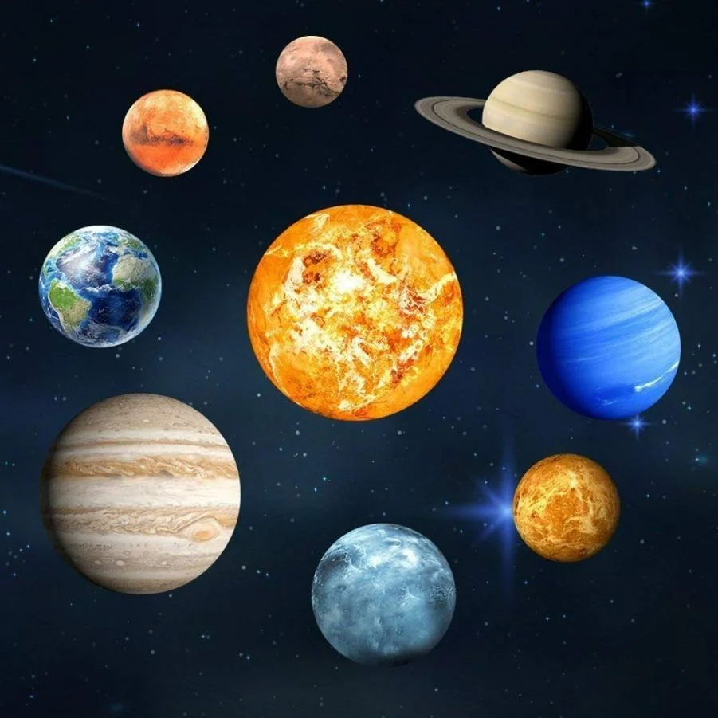

Тег <area> определяет область внутри карты изображений (карта изображений - это изображение с интерактивными областями).
Элементы <area > всегда вложены в тег <map>.
| Атрибут | Значения | Описание |
|---|---|---|
| alt | текст | задает альтернативный текст для области изображения |
| coords | значения координат | задает координаты для области изображения |
| href | URL | задает адрес документа, на который следует перейти |
| shape |
default rect circle poly |
определяет форму области изображения (прямоугольник, круг или многоугольник) |
| shape | Значения | Описание |
|---|---|---|
| rect | x1, y1, x2, y2 | координаты верхней левой (x1, y1) и нижней правой (x2, y2) вершин прямоугольника |
| circle | x, y, r | координаты центра окружности (x, y) и ее радиус (r) |
| poly | x1, y1, x2, y2, .., xn, yn | координаты вершин прямоугольника (если первая и последняя пары координат не совпадают, браузер добавит последнюю пару координат, чтобы закрыть многоугольник) |
Примечание:
Для того, чтобы убрать/изменить контур от shape, можно использовать стилевое свойство outline.
Код:
<img src="img/solar_system.webp" alt="Solar system" usemap="#planets" width="400">
<map name="planets">
<area shape="circle" coords="56,158,46" href="earth.html" target="_blank" alt="Earth">
<area shape="rect" coords="226,40,366,100" href="saturn.html" target="_blank" alt="Saturn">
</map>Реализация (выберите одну из двух планет: Земля или Сатурн):
